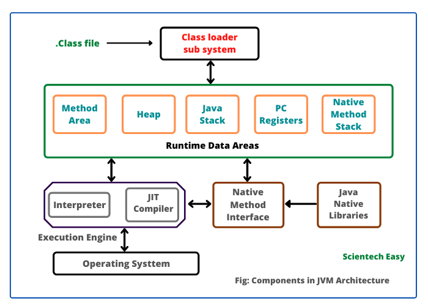

JVM Works:
Java Virtual Machine (JVM) is a crucial component of the Java Runtime Environment (JRE) that plays a central role in executing Java bytecode. Here are key topics defining the work of JVM in Java:
1.Introduction to JVM:
. Explanation of what JVM is and its significance in the Java ecosystem.
. How JVM facilitates platform independence through its bytecode execution model.
2.JVM Architecture:
. Overview of the key components of the JVM architecture, including Class Loader, Execution Engine, and Memory areas (Heap, Method Area, Stack, and PC Register).
3.Class Loader:
. Role of the Class Loader in loading Java classes into memory.
. Different types of class loaders: Bootstrap, Extension, and Application.
4.Execution Engine:
. Explanation of how the Execution Engine interprets and executes Java bytecode.
. Just-In-Time (JIT) compilation and its role in optimizing code for better performance.
5.Memory Management:
. Overview of memory areas in the JVM: Heap, Method Area, Stack, and PC Register.
. How JVM manages memory, including object allocation and garbage collection.
6.Garbage Collection:
. In-depth explanation of the garbage collection process in the JVM.
. Different garbage collection algorithms and their impact on performance.
7.Java Stack and Heap:
. Detailed discussion on the Java Stack and Heap memory areas.
. How the stack is used for method calls and local variable storage, and the heap for object storage.
8.Java Native Interface (JNI):
. Introduction to JNI and its role in enabling Java applications to interact with native code.
. Examples of scenarios where JNI might be used.
9.Java Performance Monitoring and Tuning:
. Tools and techniques for monitoring and tuning the performance of Java applications running on the JVM.
. Profiling tools, memory analyzers, and other utilities.
10.JVM Security:
. Overview of security features provided by the JVM.
. How the JVM ensures the execution of secure and sandboxed Java applications.
11.HotSpot JVM:
. Introduction to HotSpot, a widely used JVM implementation.
. How HotSpot optimizes code through adaptive compilation.
12.JVM Languages and Compatibility:
. Discussion on the compatibility of different programming languages with the JVM.
. Examples of languages other than Java that run on the JVM, such as Kotlin, Scala, and Groovy.
Note:-
Understanding these topics provides a comprehensive insight into how the Java Virtual Machine operates and manages Java applications during execution.

The JVM (Java Virtual Machine) architecture can be broken down into several key components:
- Class file: The bytecode file created by the Java compiler.
- Method Area: Stores all the class-level information (like method names, fields, etc.).
- Execution Engine: This engine interprets the bytecode present in the method area or uses a JIT compiler to compile the bytecode into machine code and execute it.
- Heap: Stores objects created by the Java application.
- Java Stack: Manages the execution of the program by storing local variables, partial outcomes, and method return addresses.
- Runtime Data Areas: Consists of all the runtime components.
- PC Register: Contains the address of the current instruction in the JVM.
- Registers: Stores data values that are being used by the program.
- Native Method Interface (JNI): Enables interaction between Java and native code (like C, C++, etc.).
- Native Method Stack: Stores the local variables and partial outcomes for the native methods.
- Java Native Libraries (JNI): Contains native libraries like JNI and Java Native Interface (JNA) for implementing native methods.
This image illustrates the interactions and components that make up the JVM architecture. It provides a high-level understanding of how Java code is executed and managed by the JVM.
Overall Functionality:
Note:- When a Java program is executed, the JVM loads the class files, verifies their integrity, and then interprets or compiles the bytecode for execution. The garbage collector manages memory by reclaiming unused objects in the heap, preventing memory leaks. The JVM ensures platform independence by providing a consistent runtime environment for Java applications across different operating systems.
In summary, the JVM serves as a virtual execution environment for Java applications, offering a combination of platform independence, memory management, and efficient execution through bytecode interpretation and compilation. Its modular architecture allows it to adapt to various hardware and operating system configurations, making Java a versatile and widely used programming language.